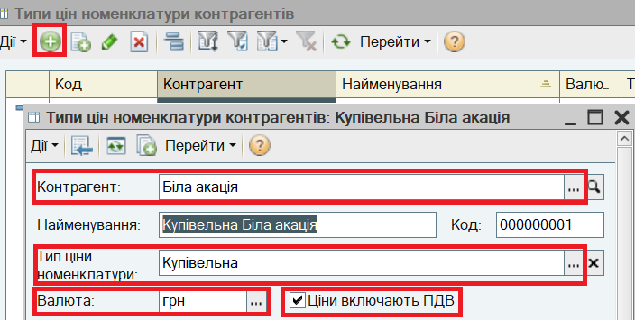
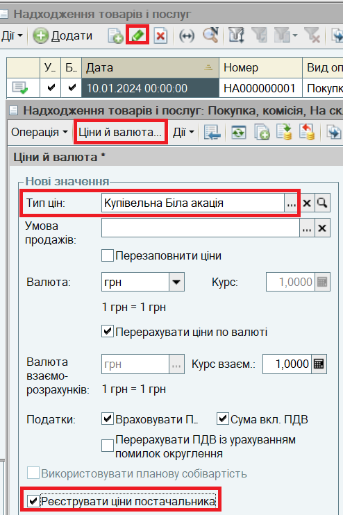
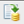
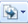
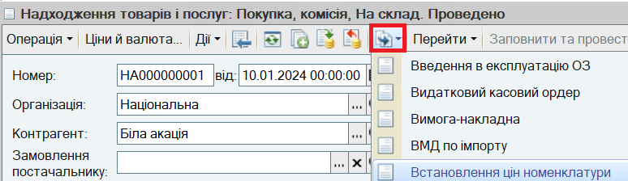
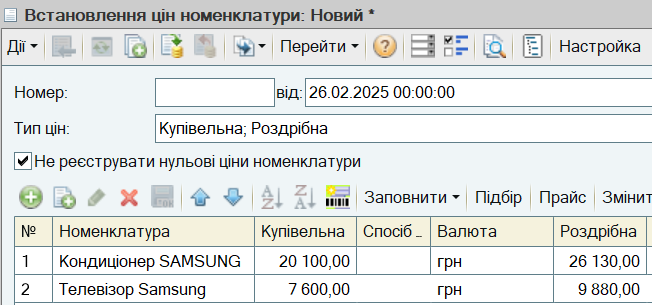

(або клавішу Insert або виберіть пункт меню Дії — Додати).
(або клавішу Insert або виберіть пункт меню Дії — Додати).Якщо постачальник визначає ціну при кожній поставці, можна налаштувати автоматизовану зміну цін продажу після кожної поставки.
1. Для постачальника зареєструйте Тип цін номенклатури контрагента. Типи цін постачальників зберігаються в довіднику Типи цін номенклатури контрагентів. Довідник викликається з пункта меню Довідник - Номенклатура - Типи цін номенклатури контрагентів. Для введення нового запису в довідник натисніть кнопку (або клавішу Insert або виберіть пункт меню Дії — Додати).

Тип цін зберігається в інформаційній базі за кнопкою ОК.
ВАЖЛИВО.
Зазначення Типа цін номенклатури необхідно для подальшого розрахунку цін продажу!
2. Відкрийте раніше введений документ Надходження товарів і послуг. Для цього зі списку документів натисніть кнопку  (або клавішу F4 , або виберіть пункт меню Дії - Змінити).
(або клавішу F4 , або виберіть пункт меню Дії - Змінити).
3. В формі документа Надходження товарів і послуг натисніть на кнопку Ціни й валюта. Встановіть Тип цін і прапор Реєструвати ціни постачальника:

УВАГА.
Прапор Перезаповнити ціни не має бути встановлений! Інакше ціни в документі надходження обнуляться, оскільки вони ще не зареєстровані.
Натисніть на кнопку ОК в діалоговому вікні Ціни й валюта.
4. Проведіть документ Надходження товарів і послуг, не закриваючи його. Для цього натисніть на кнопку

(або виберіть пункт меню Дії - Провести).5. Введіть на підставі документа Надходження товарів і послуг документ Встановлення цін номенклатури. Для цього використовуйте кнопку

(або пункт меню Дії - На підставі):
Відкриється новий документ Встановлення цін номенклатури із визначеними значеннями цін типів "Купівельна" і "Роздрібна".

Проведіть документ за кнопкою ОК. Будуть зареєстровані ціни продажу
ПРИМІТКА.
Ціна типу "Гуртова" є динамічною і розраховується при введенні документу продажу як знижка на ціну типу "Роздрібна". Отже, її теж буде розраховано виходячи з нової ціни закупки.
Наступний розділ: "Перерахування грошових коштів постачальнику з банківського рахунку організації"